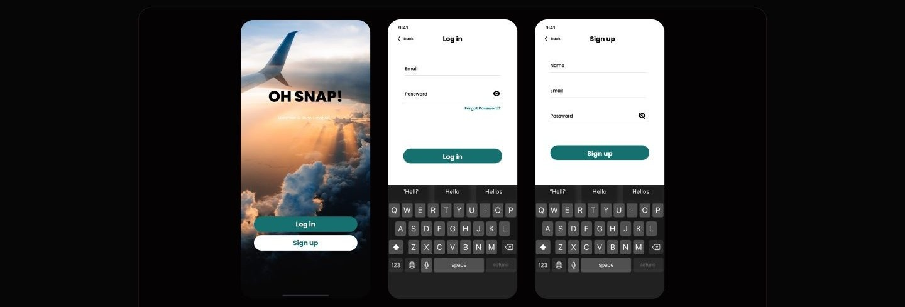

Case study 11 of 11 · Mobile app and UI kit · Independent concept project
Oh Snap
Creators plan trips with strangers from the internet. The app has to make that feel organized and safe.
2 min read

Turning a chat between two strangers into a structured trip with dates, a location, and an accept or decline decision.
How the invite flow, the pending and approved states, and the shared post credit line all reinforce the same collaboration model.
Collaboration lives in DMs, and DMs lose trips
Creators who want to shoot together have no tool that combines finding a partner, planning the trip, and crediting the result. Instagram and TikTok surface creators but stop at tagging. Airbnb and Couchsurfing handle travel and trust but are not social platforms. The plan itself, who, where, when, always falls back to unstructured chat.
- No collaboration tools built for creators, only generic tagging and duets.
- No integrated trip planning to coordinate shared shoots and activities.
- Thin identity and safety signals when deciding whether to travel with someone.
A competitor analysis of Instagram, TikTok, Airbnb, Couchsurfing, and Klook mapped where social reach, trip planning, and trust features fail to overlap.
One collaboration model, carried through every screen
From the first invite to the published post, the same structure repeats: a named partner, a place, a date, and a visible status.



What testing could and could not tell me
Formal testing with users was out of scope. Heuristic walkthroughs of these scripted tasks caught clarity issues and drove small fixes, but the trust model itself remains unvalidated.
As a concept project, testing was moderated task walkthroughs, not longitudinal use.
Appendix: foundations and system
The UI kit is what keeps a five-tab app with this much photography from drifting. Cards, navigation bars, inputs, and buttons were built once and reused across every flow.